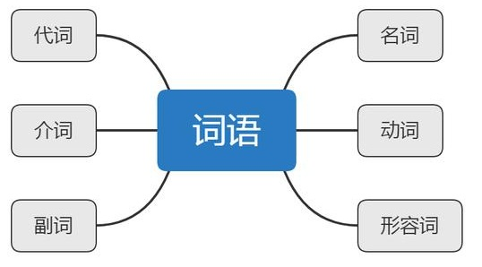
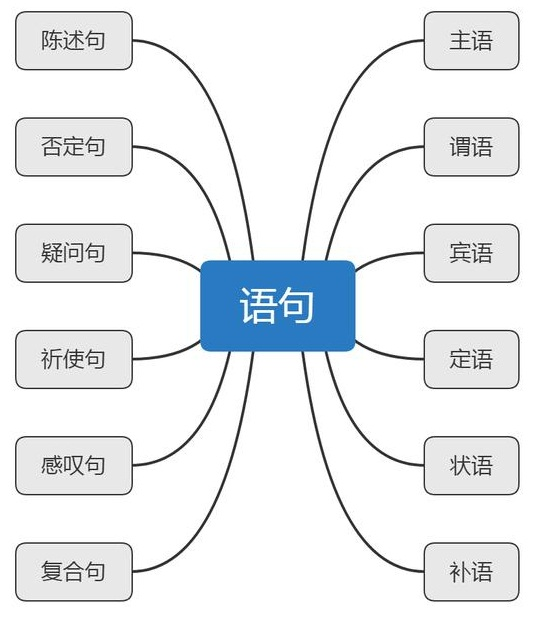
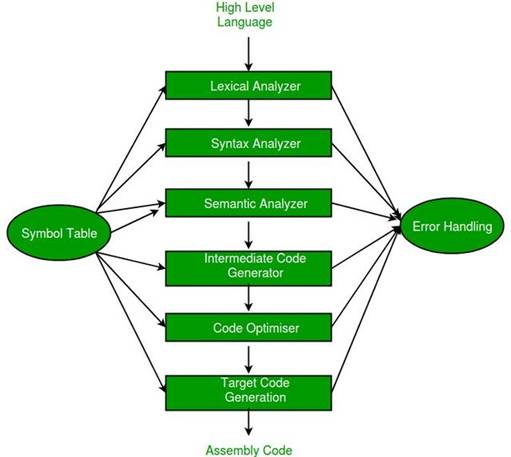
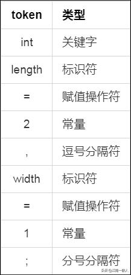
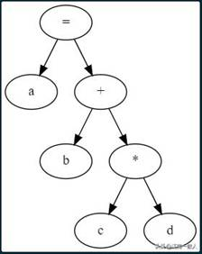
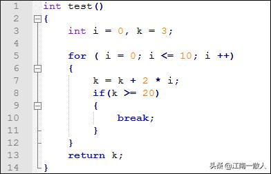
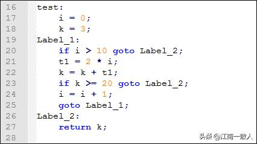
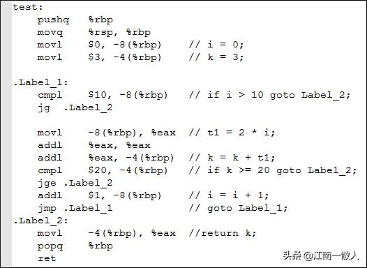

你真的懂“Hello world”吗？从编译到OS内核系列:编译器实现原理
江南一散人 2020-04-29 07:38:27
本篇是《你真的理解"Hello world"吗？ 从编译链接到OS内核系列专题》的第一章的第二小节，重点介绍编译器的实现原理。
本系列专题文章，重点分享一些程序运行背后的一些极其重要却又极易被人忽视的技术细节，相信会让你对计算机系统有一个更加全面深刻的认识。
引言
在上一节《你真的懂"Hello world"吗？从编译器到OS内核系列:编译器基本概念》中，我们了解了编译器所要解决的根本问题，是把人类的文本语言转换为二进制的机器指令，从而让计算机能够听人话、办人事儿。
我们还知道了C语言程序的构建需要经过预编译、编译、汇编、链接四个步骤，以及每个步骤的主要任务是什么。
本篇，重点讲解编译阶段的实现原理，为了方便理解，我会辅以实例进行讲解。
在正式讲解编译器的工作原理之前，我们先简单了解一下词法、语法、语义的概念和区别。
我们先以中文为例，让大家先有一个感性的认识。然后我会以C语言为例，分别列举几个实例，让大家了解在具体的编程语言中，词法、语法和语义分别对应着什么样的编程规则。
我们的大脑是怎么“编译”文章的？
我们知道，中文的最小语言单位是字，字组成词，词组成句，句最终形成文。其实这也正是大脑对文章的一个“编译”过程。
大家不妨想一下，我们平时阅读一篇文章时，我们是怎么做的呢？是不是下面这样的：
大脑对文章的处理过程
逐字扫描，组成词语
首先逐个读取每个文字，在大脑中把这些单独的字组成一个个离散的词语。这个过程中，我们会在潜意识中给组成的词进行分类，比如动词、名词、形容词和副词等，并且会根据已有的知识，去判断这个词是不是在现实中存在并且有实际意义。
这个过程，就是词法分析。

词语
根据句式，构造句子
然后，根据我们已经掌握的句式结构，把这些离散的词组合成一个个句子，如陈述句、疑问句、感叹句、祈使句、复合句等等。这些句式都有固定的句型结构，如：
- 一个完整的句子一定要有主语、谓语、宾语。
- “虽然”后面一定跟着“但是”。
- “因为”后面一定跟着“所以”。
这个过程，就是语法分析，而这些固定的句型结构，就是语法规则。

分析语句，理解含义
为了理解整篇文章所要表达的中心思想，我们需要结合上下文，理解句子所要表达的含义，并判断其是否符合常理。比如，“人类是从石头里蹦出来的”这个句子，从语法上看没有任何问题，但是语义上明显不符合常理。
这个过程，就是语义分析。
实例：从“山羊吃草”看词法、语法和语义
为了加深对词法、语法、语义的理解，我们看一个最简单的例子。
为简单起见，我们对一个合法的中文句子做以下规则约束：
- 一个完整的句子必须要有主语、谓语、宾语
- 主语和宾语必须为名词，谓语必须是动词。
- 每个词语必须是现实存在且有意义的。
现在，我们看下面四个句子：
- 山羊吃草。
- 山牛吃草。
- 山羊草。
- 草吃山羊。
思考一下，哪一句是合法的呢？不合法的句子分别有什么错误呢？

我们来分析一下：
山羊吃草
主语是“山羊”，谓语是“吃”，宾语是“草”。很显然，三条规则都满足，并且符合常识。因此，这句话是合法的。
山牛吃草
“山牛”这个词现实中不存在，是无意义的，因此不符合第三条规则。属于词法错误。
山羊草
缺少谓语，不能构成一个完整的句子，不符合第一条规则。属于语法错误。
草吃山羊

乍一看，这句话主谓宾都清晰明确，且都是现实存在并有实际意义的词语，所以，它是符合中文语法的。但这就意味着这句话是正确的吗？显然不是。现实世界中，草怎么可能吃山羊呢？这显然不符合常理，因此，这句话存在语义错误。
C语言词法、语法、语义举例
我们通过中文实例了解了词法、语法和语义的概念之后，再来看下在C语言中，分别对应着什么规则。
注：由于篇幅所限，不可能覆盖C语言所有的规则，这里仅举几个典型的例子，让大家加深理解。
词法规则
- 标识符由26个英文字母、数字和下划线组成，且不能以数字开头。
- 单行注释必须以‘“//”标识，多行注释必须以“/*”和“*/”标识。
- 字符串必须以双引号标识。
语法规则
- 每个语句必须以分号结束。
- 变量声明必须由类型开始，后面跟变量名。
- “else”关键字前面必须有“if”关键字进行配对。
- “case”语句必须和“switch”进行配对使用。
语义规则
- 任何类型的变量都不能除以零。
- 两个同类型的指针变量不能相加，但可以相减。
- 函数调用时时，实参个数必须和形参个数相等，且类型相互兼容。
了解了词法、语法、语义的基本概念之后，我们来看看程序构建过程中，编译器是如何处理的。
编译器的基本阶段
构建程序时编译器对程序源代码的处理过程，和我们读书时大脑对文章的处理过程，是类似的。
典型的编译器都是分阶段实现的，每个阶段的输出都作为下一阶段的输入，把程序从一种表示形式转换成另外一种表示形式，最终转化成目标程序。
这几个阶段如下图所示：

编译的过程
词法分析 - Lexical Analysis
简单来说，词法分析阶的主要任务是：
- 识别出源码文件中的词法单元，即token。
- 对识别出来的词法单元进行分类，如预留关键字、常量、标识符、操作符等。
- 根据词法规则，识别出非法的词法单元，并进行错误处理(一般是打印错误信息)。
词法分析阶段，对程序源码文件从左到右，逐字符进行扫描，根据词法规则，把这些字符组合成一系列单词序列，或者叫作“token”。
把字符组合成token之后，还要对其进行分类。以C语言为例，我们可以得到的token类型有预留关键字(如int, if, switch, for, while等)，操作符(如 “+”、“-”、“*”、“/”等)、标识符，字符串、常量等。
如下C语言代码片段：
int length = 2, width = 1;
经过词法分析后，我们可以得到如下token序列：

token 序列
词法分析阶段还有一个很重要的工作，就是要根据词法规则，检测出非法的字符序列，并进行错误处理。
如C语言规范要求所有的变量名称必须以26个字母和‘_’组成，且不能以数字开头。因此如下面代码片段：
int 4abc = 1;
在词法分析过程中，以数字开头的变量名“4abc”会被视为非法标识符，此时编译器会抛出词法错误的信息。
语法分析
语法分析阶段的主要任务是根据语法规则，确定程序的语法结构，把词法分析阶段得到的token序列组合成表达式(expression)、语句(statement), 函数(function)等各种语法单元。
语法分析阶段的输出是一颗抽象语法树(Abstract Syntax Tree)。
如下代码片段：
a = b + c * d;
经过语法分析后，会得到这样一颗抽象语法树：

抽象语法树(AST)
语义分析
语义分析是在语法分析阶段构造出来的抽象语法树的基础上，对程序进行静态语义的分析，确保程序不仅符合语法规范，还应该能够正常执行。
对于静态类型的编程语言来说，语义分析阶段最重要的工作之一，就是类型检查。例如，传递给函数的实参类型是否和函数声明中的形参类型相互兼容，做减法运算的两个指针类型是否相同等等。
限于篇幅原因，这里不再展开说明。
而对于动态类型语言，如Python，则是把类型检查推迟到了运行时，这也是动态类型语言一般比静态类型语言运行效率低的原因之一。
中间代码生成
咱们的经典古籍《离骚》，相信大家都印象深刻吧，通篇都是晦涩难懂的文言文，要想把它直接翻译成英文，是非常困难的一件事情。
但是，如果把晦涩难懂的文言文，先翻译成通俗易懂的现代白话文，然后再翻译成英文，这样操作起来，是不是难度就小的多了呢？
同样，高级语言一般都是高度抽象的，相比机器语言或目标语言来说，其语法结构和数据类型都更为复杂。因此，很难从高级语言直接生成目标语言，于是便有了中间代码，或者叫中间表示(Intermediate Representation)。
中间代码是一种在语法结构和数据类型更接近目标语言的表现形式。它处理起来要比原始语言更加简单，便于进行逻辑优化，更加容易生成简洁、高效的目标代码。
不同的编译器，通常都有自己专用的中间代码形式，且一般互相之间并不兼容。如GCC，Clang/LLVM都有自己专有的中间代码。当然了，当今编译器界的“网红一哥”——华为方舟编译器，也不例外。
三地址码是一种比较简单也很常见的一种中间表示，一般格式如下：
x = y op z
之所以叫三地址码，是因为每条语句最多包含三个地址，也就是：
- 结果变量 x
- 运算变量 y和z
- 操作码 op
仍以下面的代码段为例：
a = b + c * d;
转换为三地址码为：
t1 = c * d;
a = b + t1;
其中，t1为引入的临时变量。
我们再看一个稍微复杂点的例子：

test() 源码
转化成三地址码：

test() 三地址码
代码优化
从抽象语法树到中间代码，往往是一个非常简单机械的操作，它更多考虑的是如何对语句实行等价地转换，代码的效率往往不作为主要考虑因素。这里的效率，包含时间效率和空间效率。
为了最终生成的程序能够更高效的执行和存储，现代编译器往往会花很大力气去对代码进行优化，而且往往会不止一次地对代码进行扫描和优化。
对于任何一个现代编译器项目，代码优化是整个项目中最关键也最复杂的核心功能，而且往往也是最容易出错的地方。毫不夸张地说，一个编译器项目的成功与否，很大程度上取决于其代码优化模块。
常用代码优化方法有很多，如：
- 死代码删除
- 常量折叠
- 循环展开
- 跳转优化
- 公共子表达式消除
需要强调一点，除了基于中间代码的优化之外，在生成目标代码时，往往也会进行优化。
目标代码生成
目标代码生成是编译的最后一个阶段（通常还会伴随着代码优化），它以优化后的中间代码作为输入，产生等价的目标代码作为输出。
现代编译器很少把中间代码直接转化为二进制机器指令，通常会选择汇编语言作为目标语言。
对于如C语言这样的编译型语言，代码生成时，通常主要考虑的是：
语义等价。这是最基本的要求，因为只有与原始代码语义上等价的目标代码，才能正确运行，得到期望的结果。
高效。生成的代码要尽可能在时间和空间上保持高效，因此代码生成的过程中往往也伴随着代码优化，要充分考虑到对硬件资源的最优化使用，如寄存器、cache、流水线等。
如对上例中的test()的三地址码生成的汇编代码如下：

test() 三地址码生成的汇编代码
结语
为了搞清楚编译器的原理，我曾自己动手从零开始设计开发了一个简单的编译器，能够支持C语言的大部分语法，并增加一些针对分布式系统的特性，如并发、消息、有限状态机、定时器等功能。在本系列专题文章的前言中，有一个简单的demo，感兴趣的童鞋可以去看一下。
在这个编译器的开发过程中，我深深体会到编译器开发是一个极其复杂的工作，里面涉及到的各种数据结构、算法之多，各种需要考虑的问题之繁杂。
当然，在这个过程中也收获了很多乐趣，搞清楚了很多之前一直比较好奇却不知道的答案的问题，比如各种IDE工具中的语法高亮、上下文代码检索等功能是如何实现的等等(我在之前的一篇文章有讲解)。
同时，这也是对自己编程技能的一个综合性的锻炼，尤其是对哈希表、树、图等数据结构和算法的掌握。有兴趣的童鞋，不妨尝试一下，相信你会收获颇丰！
最后，由于编译器涉及的各方面知识太多，根本不可能通过一篇文章将其全部囊括其中。因此，本篇也只能简要介绍其中一些重要概念和各个阶段完成的主要工作，让童鞋们对编译器有一个整体的认识。
以后有时间的话，准备搞一个专题，专门来介绍编译器开发中的一些技术细节，感兴趣的童鞋不妨关注一下吧。
下篇预告
下篇是《你真的理解"Hello world"吗？ 从编译链接到OS内核系列专题》的第二章，重点介绍链接器的工作原理，敬请期待！